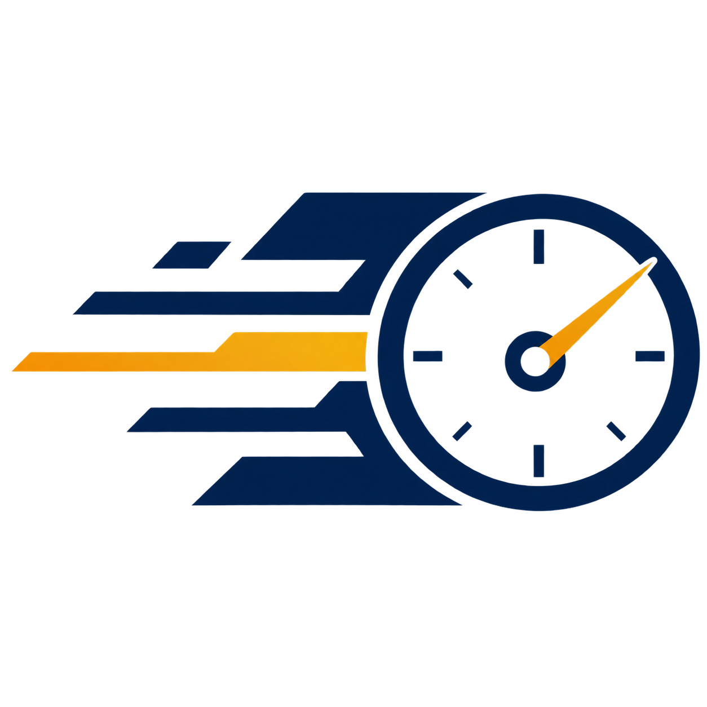

Discovery is fragmented
Factories can spend time calling different labs without one structured place to compare suitable capabilities.

Digi_CalX A D-HAG project D-HAG ↗Pakistan · Calibration technology · D-HAG
Digi_CalX is being designed as a Pakistan-first calibration services network: factories discover technically eligible labs, labs manage the work, and each job stays connected through quotes, custody, evidence, certificates and future due dates.
A factory needs more than a phone number. The selected laboratory must actually fit the instrument, range, service location and any accreditation or uncertainty requirement. After selection, the factory still needs clear quotes, status, evidence and a reliable certificate history.
Factories can spend time calling different labs without one structured place to compare suitable capabilities.
“We calibrate pressure” is not enough. Range, method, location and verified scope can change whether a lab is suitable.
Quotes, pickup, intake, results, adjustment decisions, payments and certificates can live in separate conversations and files.
A rating alone cannot prove technical competence. Capability evidence, reference-standard control, certificate history and dispute outcomes matter.
Digi_CalX combines three connected layers so discovery does not end at booking and lab software does not end at internal paperwork.
Register instruments, define calibration needs, compare technically eligible labs and accept a clear quote.
Capabilities, jobs, technicians, reference standards, calibration records, reviews and certificates in one workflow.
Verified scope, evidence chain, reference-standard controls, immutable as-found results and structured disputes.
Request, quote, custody, calibration, certificate, return, rating and next-due history remain linked.
The platform organizes and verifies the digital workflow. The physical calibration remains the responsibility of the calibration laboratory and competent personnel.
The factory adds its asset or instrument, identity information and available technical details without being forced to understand every metrology term.
Calibration type, in-lab or on-site service, deadline, logistics, certificate needs and any known specification or accreditation requirement are captured.
Digi_CalX filters by capability, range, verified scope when required, service location, uncertainty requirement, logistics and availability before ranking results.
The factory compares like-for-like service, turnaround, logistics, verification signals and price, then accepts a versioned quote.
Serial number, condition, accessories, custody events and relevant timestamps create a record of what changed hands and when.
The technician uses the laboratory's approved method and reference standards. Digi_CalX records the process and evidence; it does not physically calibrate the instrument.
As-found measurements are preserved. Any adjustment or repair is separate, requires authorization, and is followed by an as-left recalibration when performed.
An authorized reviewer approves the certificate. The factory receives the final document, return status, calibration history and future due reminder.
Technical eligibility before marketing rank
Ratings and price only matter after a lab passes the technical filters for the request. Digi_CalX is designed to explain why a lab matched instead of hiding the decision behind one mystery score.
Paid placement can never make a technically ineligible lab eligible.
Digi_CalX is designed to preserve the evidence chain around technical work without pretending that software itself is the laboratory or accreditation authority.
Identity, certificate version, due date, uncertainty and control status can be linked to calibration runs. Expired or out-of-service standards are blocked from obvious invalid use.
Adjustment never erases the original observed condition. As-found and as-left states remain distinct and auditable.
Issued certificates are tied to approved snapshots. Corrections create revisions rather than silently replacing the original record.
Disputes freeze material evidence and can route technical cases to qualified review or independent verification when needed.
Digi_CalX organizes the workflow. A competent laboratory performs the physical measurement.
Results are represented through measured values, error/correction, uncertainty and applicable specifications.
The platform may verify and display scope evidence; using Digi_CalX does not make a laboratory accredited.
Future automation may assist, but calibration results, conformity decisions and certificate approval remain human technical responsibilities.
07 / Current status
The final product direction and engineering specification are defined. The current stage is to validate real factory selection behavior, laboratory capability data, technical terminology, pricing willingness and trust workflows before the full product build.
D-HAG is a Pakistan-based technology company co-founded by Muhammad Hassan Azhar and Muhammad Mansoor Javeed. Digi_CalX applies D-HAG's practical product-building approach to calibration service discovery, laboratory operations and technical trust.
Validation inquiries
Digi_CalX is not open for public calibration bookings yet. If you operate a calibration laboratory, manage instruments at a factory, or work in metrology/ISO/IEC 17025 and want to contribute practical feedback, contact D-HAG.